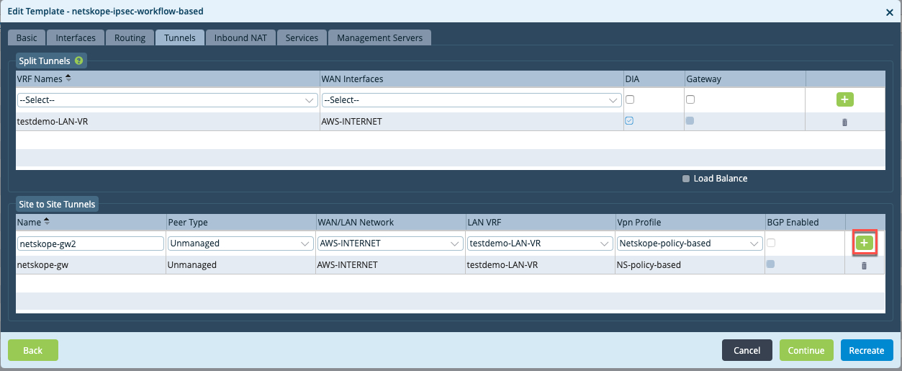
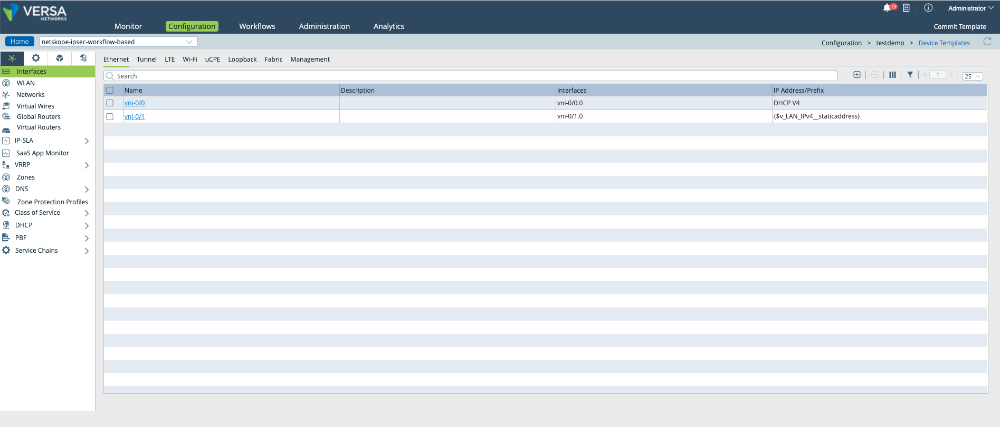
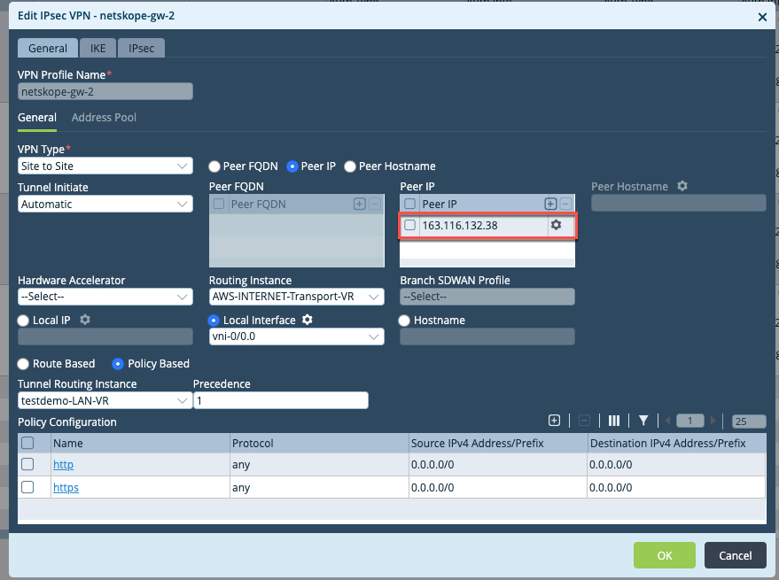
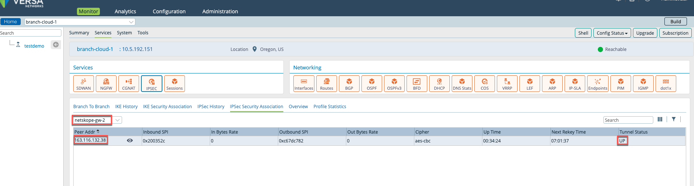

Configure an IPsec Tunnel using a Workflow Template
Go to Director > Workflows > Template > Templates.
Add new workflow template by clicking on

Configure your basic information on the General, Interfaces, and Routing tabs.

Click on the Tunnels tab.
Under Split tunnels, configure the DIA tunnel from your LAN VR for DNS queries.

To configure site to site tunnels with Netskope, go to the Site to Site Tunnels section:
Configure an appropriate name for the tunnel
select peer-type as Unmanaged
Select a WAN network
Select customer LAN VRF
Select + Add New from the Vpn Profile dropdown to configure a new VPN profile.

Under Create Authentication Profile:
Configure appropriate ‘VPN Profile Name’
Select Ike Version ‘v2’
Select Ike transform ‘aes128-sha512’
Select IPSec Transform ‘esp-aes128-sha512’’
Select No. of tunnels as 2
Configure a ‘Peer Auth PSK Key’
Configure Netskope WAN IP as ‘Peer Auth IP Identifier Identity’
Select Tunnel Config as ‘policy based’

Under Policy Configuration section, Click on to add new policy :
Add a policy to accept http traffic , then click OK.

Add a second policy to accept https traffic, then click OK.

Click OK in the Create Authentication Profile window.

Click on the green at the end of tunnel configuration to add the tunnel.
 Complete the Inbound NAT, Services, and Management Servers configurations per your requirements, and then click on Recreate to create workflow template.

Go to Configuration > Templates > Device Templates and select the template you created in the previous step to enter the template configuration view.
 Go to Services > IPSec > VPN Profiles. Because 2 tunnels were selected, two separate VPN profiles have been created:
Netskope-gw1andNetskope gw2.Click on
Netskope-gw1to edit, and go to the IKE tab.Modify the DH group to
Diffie-Hellman-Group 14 2048.
Go to the IPSec tab, modify the DH group to
Diffie-Hellman-Group 14 2048, and then click OK.
Click on
Netskope-gw2and modify the Peer IP to that of the back-up tunnel endpoint. Go to IKE tab and modify the DH group to
Diffie-Hellman-Group 14 2048and Peer Auth Identity to the backup tunnel endpoint.
Go to IPsec tab and modify the DH group to
Diffie-Hellman-Group 14 2048, and then click OK.
Go to Workflows > Devices > Devices and click OK to add a Device template based on the workflow template created in previous step. Enter the basic information under Basic > Device Service template and tabs.
Under Tunnel Information, verify that tunnel information is auto-populated . If some information has to be provided by the user, update the information.

Under Bind data section , enter your relevant bind data information and click OK.
netskope-gw-1_Local_auth_ip_identifier__IKELIdentifieris the Versa source WAN IP for the primary tunnel.netskope-gw-1_Local_auth_key__IKELKeyis the shared key for the primary tunnel.netskope-gw-2_Local_auth_ip_identifier__IKELIdentifieris the Versa source WAN IP for backup tunnel.netskope-gw-2_Local_auth_key__IKELKeyis the shared key for the backup tunnel.

Deploy the Device workflow configuration and onboard the device.
Verification
Go to the Monitor tab, select Organization > Devices, and select a device.
Click Services > IPSEC > IPSEC Security Association and select
netskope-gw1from the dropdown list to view tunnel status
Select
netskope-gw-2to verify backup tunnel status.